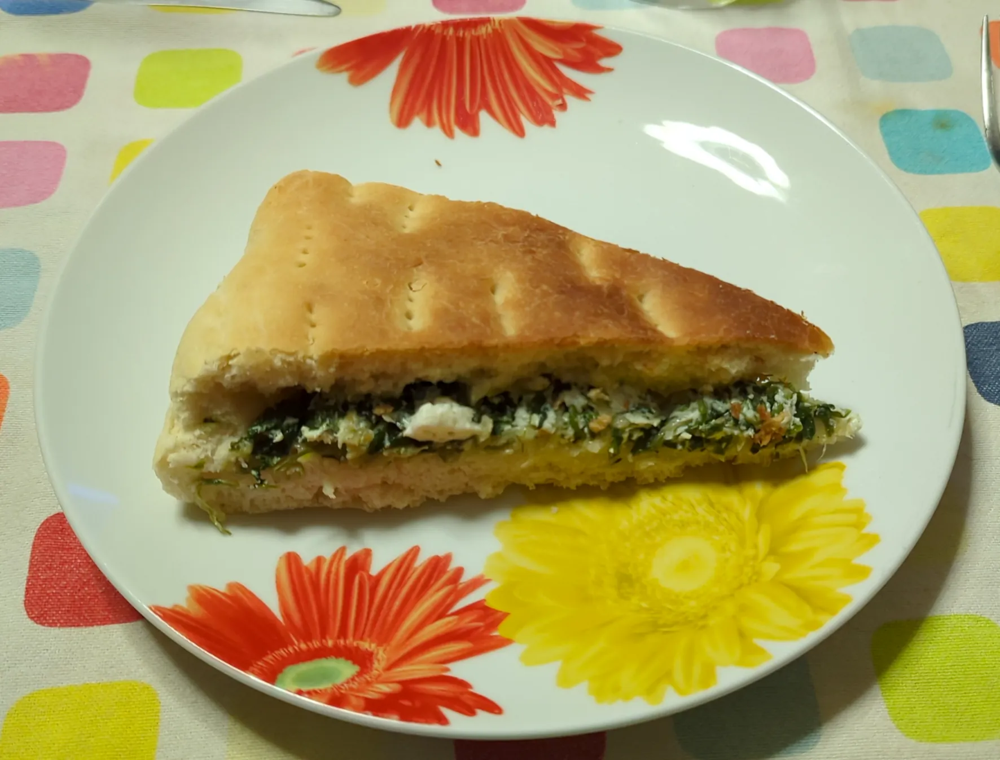

Home
Herbs Pizza

Description:
Italian traditional pizza is Neapolitan pizza. This is not it - it’s a very different dish that just happens to share the same name (as is the case with many Italian traditional recipes).
- Preparation Time:
- ⏲️ Prep time: 20 min + 30 min for rising
- 🍳 Cook time: 30 min
- 🍽️ Servings: 4
Ingredients
- Dough:
- 350 g flour (0 or 00)
- 25 g butter
- 15 g brewer’s yeast
- extra-virgin olive oil or lard
- Stuffing:
- 500 g boiled herbs (e.g. spinach, chicory, ribwort)
- 250 g ricotta
- pepper (optional)
- nutmeg (optional)
Steps
- Carefully dry the herbs and cut them finely.
- Mix them with ricotta, salt, pepper and nutmeg.
- Knead flour with warm water and a little salt, and oil or lard.
- Add softened butter and yeast and knead a soft dough.
- Divide the dough in two parts and roll out each of them to a thickness of about 1 cm.
- Place the first disc on baking paper in a baking tray. Cover it with the stuffing, leaving about 1.5 cm free surface all around.
- Cover with the other disc and stick them together all over the border. If it’s difficult, you may wet it wit a few drops of water.
- Cover with a cloth and let it rise.
- Pierce gently all over the top layer with a fork.
- Preheat the oven to 180 °C.
- Place the pie in the oven and cook for 30 minutes.